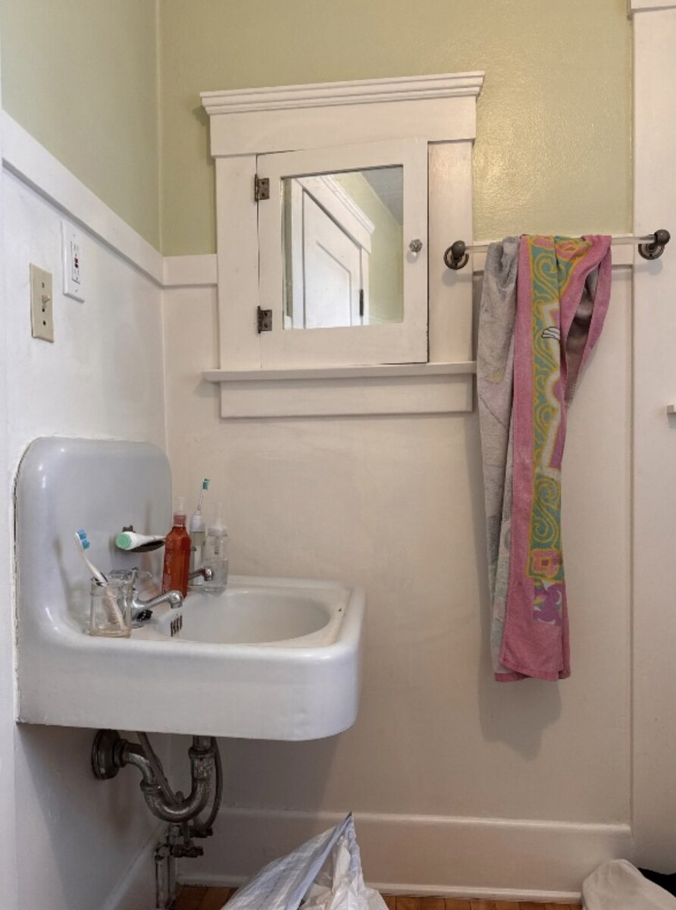

Professional handyman service
Clean work. Clear communication. Quality results.
Reiss Home Services helps homeowners with thoughtful repairs and small improvements that make a home feel finished—from bathroom and laundry updates to trim, doors, fencing, and punch-list projects.
Serving San Diego, Poway, Escondido, Del Mar, La Jolla, and Coronado.
Friendly service
Tidy job sites
Detail-focused finish work

Professional and approachable
Straightforward communication, clean presentation, and work that feels considered from start to finish.
Small projects done well
Ideal for the updates and repairs that matter to daily life, but still deserve quality craftsmanship.
Results that look right
The goal is simple: finishes that are polished, useful, and built to fit the home.
Services
Practical updates with a polished finish.
Reiss Home Services is built for the kind of work homeowners want done carefully, cleanly, and without a lot of runaround.
Bathroom refreshes
Vanities, mirrors, hardware, trim details, and improvements that elevate the space.
Laundry & utility spaces
Updates that make hard-working areas more functional, better organized, and better looking.
Trim & finish work
Clean lines and thoughtful carpentry details for doors, wall treatments, and interior finishes.
Doors, hardware & repairs
The smaller fixes and adjustments that help a home feel cared for and complete.
Fencing & outdoor improvements
Exterior work that improves privacy, structure, and the overall look of the property.
Punch-list projects
When you have several items to knock out, Reiss provides a reliable, professional option.
Selected Projects
Before and after work that speaks for itself.
A few examples of how thoughtful updates can completely change the look and feel of a space.


Bathroom vanity refresh
A dated sink wall became a cleaner, more intentional focal point with a custom-looking vanity, upgraded lighting, and a more finished feel.


Laundry / utility space improvement
A more useful, better-looking setup with a cleaner layout and a finished, everyday-ready result.


Backyard fence build
An open yard transformed with strong vertical lines, added privacy, and a much more finished edge to the property.
Why Reiss
Succinct, professional, and easy to work with.
Friendly communication
You work directly with Matt and get clear, straightforward updates along the way.
Respect for the home
Clean job sites, thoughtful planning, and attention to the details homeowners actually notice.
Work that feels finished
The end result should not just function well—it should look like it belongs there.
Service Area
Serving homeowners across San Diego County.
Current service areas include the communities below.
San Diego
Poway
Escondido
Del Mar
La Jolla
Coronado
Contact
Have a project in mind?
Send a few photos or give Matt a call. You’ll get a straightforward response on scope, fit, and next steps.